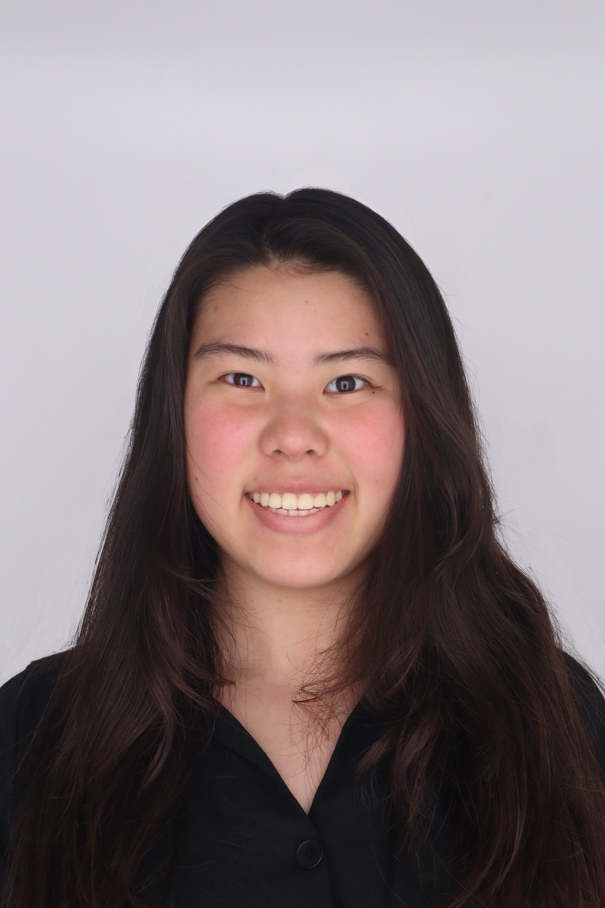

THE THINGS WE KEEP & THE STORIES WE KEEP CLOSE

I'm currently a student at Vanderbilt University majoring in Computer Science and Art with a minor in Engineering Management. I have a wide variety of interests, but ultimately love the spontaneousness of life and constantly trying new things. My journey has taken me solo traveling across half the world, led me to conduct multidrug-resistant bacterial research, and build my own sustainability-fashion startup. Even though entrepreneurship sits at the center of my long-term career goals, for now, I’m diving deep into product management and design.
I’m someone who lives for the little things—morning reflections with coffee, epiphanies scribbled in notebooks, and spontaneous side quests that turn into lifelong memories. I’ve always been drawn to stories—especially the ones we don’t often get to hear.
I love storytelling and even more so, listening. There’s something sacred about hearing someone share a piece of their world, their past, their why. In a parallel life, I think I’d be a journalist—asking questions, chasing meaning, and documenting lives as they unfold. That curiosity has led me to write, to create, and to keep searching for threads that tie us together.
"Just Life" is my corner of the internet to slow down and share those raw, beautiful in-between moments. It’s a journal of growth, travel, reflection—and hopefully a little inspiration to let life just… life.